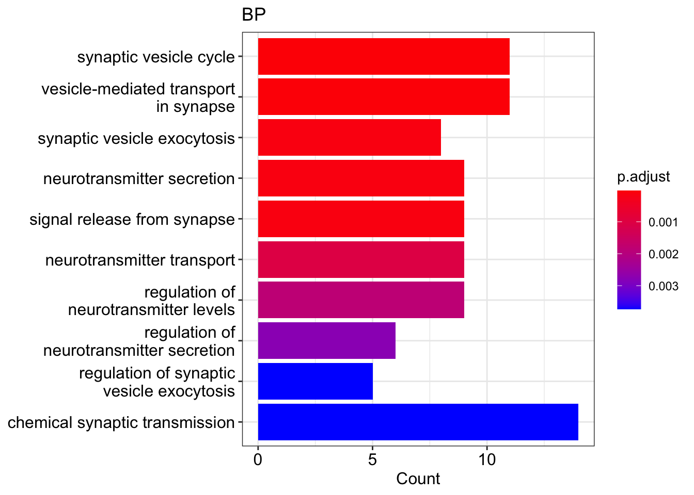
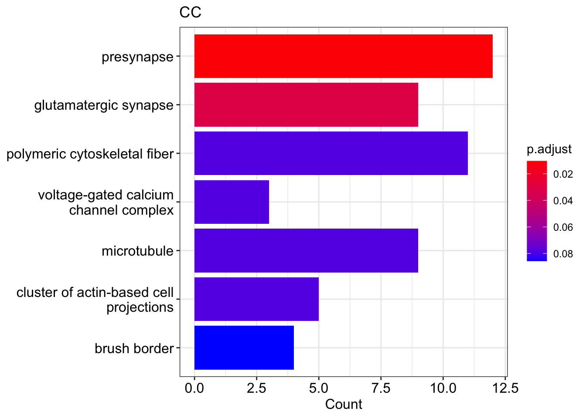

Chapter 7 GO and KEGG: PTB1 targets 09
7.1 Load the data
data_MAPP <- read.table("../data/inclusion_fractions_FG_RBFOX1_targets_09.tsv",
header = T)head(data_MAPP)7.2 Gene ontology (GO)
7.2.1 Prepare the gene list
genes <- data_MAPP %>% arrange(desc(ABSDIFF)) %>% dplyr::select(gene_id) %>%
unlist()
genes <- unlist(strsplit(genes, ","))head(genes)## gene_id1 gene_id2 gene_id3 gene_id4 gene_id5
## "ENSG00000157445" "ENSG00000007047" "ENSG00000081923" "ENSG00000124313" "ENSG00000197959"
## gene_id6
## "ENSG00000117114"7.2.2 Biological process (BP)
type_of_GO = "BP"
assign(paste0("GO_", type_of_GO), enrichGO(
genes,
organismDB,
keyType = "ENSEMBL",
ont = type_of_GO,
pvalueCutoff = pvalueCutoff,
minGSSize = minGSSize,
pAdjustMethod = "BH",
universe = universe,
readable = TRUE))
df_GO <- eval(parse(text = paste0("GO_", type_of_GO)))if(nrow(df_GO) > 0){
DT::datatable(df_GO@result %>% filter(p.adjust < 0.1), options = list(scrollX = TRUE))
} else "no GOs were found"if(nrow(df_GO) > 0){
barplot(df_GO, showCategory = showCategory,
title = type_of_GO)
} else "no GOs to plot"
7.2.3 Molecular function (MF)
type_of_GO = "MF"
assign(paste0("GO_", type_of_GO), enrichGO(
genes,
organismDB,
keyType = "ENSEMBL",
ont = type_of_GO,
pvalueCutoff = pvalueCutoff,
minGSSize = minGSSize,
pAdjustMethod = "BH",
universe = universe,
readable = TRUE))
df_GO <- eval(parse(text = paste0("GO_", type_of_GO)))if(nrow(df_GO) > 0){
DT::datatable(df_GO@result %>% filter(p.adjust < 0.1), options = list(scrollX = TRUE))
} else "no GOs were found"if(nrow(df_GO) > 0){
barplot(df_GO, showCategory = showCategory,
title = type_of_GO)
} else "no GOs to plot"
7.2.4 Cellular component (CC)
type_of_GO = "CC"
assign(paste0("GO_", type_of_GO), enrichGO(
genes,
organismDB,
keyType = "ENSEMBL",
ont = type_of_GO,
pvalueCutoff = pvalueCutoff,
minGSSize = minGSSize,
pAdjustMethod = "BH",
universe = universe,
readable = TRUE))
df_GO <- eval(parse(text = paste0("GO_", type_of_GO)))if(nrow(df_GO) > 0){
DT::datatable(df_GO@result %>% filter(p.adjust < 0.1), options = list(scrollX = TRUE))
} else "no GOs were found"if(nrow(df_GO) > 0){
barplot(df_GO, showCategory = showCategory,
title = type_of_GO)
} else "no GOs to plot"
7.3 KEGG
7.3.1 Prepare the the data
# select gene_id in ENSEMBL format and DIFF from the result table
DIFF <- data_MAPP %>% dplyr::select(gene_id, DIFF)
# rename the gene_id column
names(DIFF)[1] <- "ENSEMBL"
head(DIFF)
# create new df by converting ENSEMBL ID into ENTREZID and adding DIFF column
# sort table by in descending order by abs(DIFF)
genes_ENTREZ_df <- bitr(data_MAPP$gene_id, fromType = "ENSEMBL",
toType = "ENTREZID", OrgDb= organismDB) %>%
left_join(DIFF, by = "ENSEMBL") %>%
arrange(desc(abs(DIFF)))## 'select()' returned 1:1 mapping between keys and columns## Warning in bitr(data_MAPP$gene_id, fromType = "ENSEMBL", toType = "ENTREZID", : 3.06% of
## input gene IDs are fail to map...head(genes_ENTREZ_df )
# create a vector with DIFF values
genes_DIFF <- genes_ENTREZ_df$DIFF
genes_DIFF## [1] -0.8358725 -0.8257557 -0.7708317 -0.7253903 -0.6807944 -0.6673038 -0.6374273 -0.6063017
## [9] -0.5928132 -0.5837685 -0.5498302 -0.5156668 -0.5131267 -0.4913183 -0.4904037 -0.4874627
## [17] -0.4858158 -0.4778612 -0.4712907 -0.4629705 -0.4629685 -0.4308766 -0.4210806 -0.3956039
## [25] -0.3937732 -0.3937624 -0.3866421 -0.3806583 -0.3748361 -0.3734401 -0.3619472 -0.3590499
## [33] -0.3346450 -0.3318807 -0.3283974 -0.3017486 -0.2937947 -0.2823431 -0.2775016 -0.2760941
## [41] -0.2750906 -0.2697988 -0.2569122 -0.2449537 -0.2437877 -0.2399435 -0.2374465 -0.2350401
## [49] -0.2350125 -0.2348441 -0.2331630 -0.2252108 -0.2226148 -0.2190513 -0.2188537 -0.2160939
## [57] -0.2137278 -0.2090721 -0.2050971 -0.1995887 -0.1963116 -0.1953891 -0.1946038 -0.1907279
## [65] -0.1852250 -0.1802956 -0.1762969 -0.1746900 -0.1733775 -0.1733665 -0.1732260 -0.1729623
## [73] -0.1708320 -0.1580064 -0.1465838 -0.1460860 -0.1443043 -0.1429955 -0.1360011 -0.1316578
## [81] -0.1308839 -0.1265238 -0.1252140 -0.1230552 -0.1219384 -0.1186675 -0.1180657 -0.1179384
## [89] -0.1172783 -0.1171512 -0.1164545 -0.1106982 -0.1088295 -0.1088234 -0.1056889 -0.1052476
## [97] -0.1052013 -0.1020050 -0.1018100# add names based on ENTREZID
names(genes_DIFF) <- genes_ENTREZ_df$ENTREZID
genes_DIFF## 55799 57787 5205 23096 26052 23266 8943 8541
## -0.8358725 -0.8257557 -0.7708317 -0.7253903 -0.6807944 -0.6673038 -0.6374273 -0.6063017
## 1803 57828 4771 91050 5378 92335 23301 2199
## -0.5928132 -0.5837685 -0.5498302 -0.5156668 -0.5131267 -0.4913183 -0.4904037 -0.4874627
## 817 157574 10059 57568 10059 8028 22864 783
## -0.4858158 -0.4778612 -0.4712907 -0.4629705 -0.4629685 -0.4308766 -0.4210806 -0.3956039
## 10892 93664 4676 4345 4430 6334 9208 26260
## -0.3937732 -0.3937624 -0.3866421 -0.3806583 -0.3748361 -0.3734401 -0.3619472 -0.3590499
## 8618 55605 283234 54828 114327 1781 55605 124565
## -0.3346450 -0.3318807 -0.3283974 -0.3017486 -0.2937947 -0.2823431 -0.2775016 -0.2760941
## 6185 7337 84326 1305 56947 9112 825 5796
## -0.2750906 -0.2697988 -0.2569122 -0.2449537 -0.2437877 -0.2399435 -0.2374465 -0.2350401
## 84081 114883 6749 10525 51026 114883 55605 445815
## -0.2350125 -0.2348441 -0.2331630 -0.2252108 -0.2226148 -0.2190513 -0.2188537 -0.2160939
## 79772 8882 10561 5923 726 220869 10675 83787
## -0.2137278 -0.2090721 -0.2050971 -0.1995887 -0.1963116 -0.1953891 -0.1946038 -0.1907279
## 323 4212 134429 4152 8502 26750 8853 130733
## -0.1852250 -0.1802956 -0.1762969 -0.1746900 -0.1733775 -0.1733665 -0.1732260 -0.1729623
## 65258 8073 101927314 4926 1759 8555 10755 55975
## -0.1708320 -0.1580064 -0.1465838 -0.1460860 -0.1443043 -0.1429955 -0.1360011 -0.1316578
## 57153 10175 283130 22872 79621 146664 23348 23143
## -0.1308839 -0.1265238 -0.1252140 -0.1230552 -0.1219384 -0.1186675 -0.1180657 -0.1179384
## 55638 6597 9873 9819 23175 4800 26269 22978
## -0.1172783 -0.1171512 -0.1164545 -0.1106982 -0.1088295 -0.1088234 -0.1056889 -0.1052476
## 55743 8573 8559
## -0.1052013 -0.1020050 -0.10181007.3.2 run KEGG
KEGGresults <- enrichKEGG(
names(genes_DIFF),
organism = "hsa",
keyType = "ncbi-geneid",
pvalueCutoff = 0.1,
pAdjustMethod = "BH",
universe = as.character(na.omit(ENTREZ_universe)),
use_internal_data = FALSE
)
KEGGresults## #
## # over-representation test
## #
## #...@organism hsa
## #...@ontology KEGG
## #...@keytype ncbi-geneid
## #...@gene chr [1:95] "55799" "57787" "5205" "23096" "26052" "23266" "8943" "8541" "1803" "57828" ...
## #...pvalues adjusted by 'BH' with cutoff <0.1
## #...0 enriched terms found
## #...Citation
## T Wu, E Hu, S Xu, M Chen, P Guo, Z Dai, T Feng, L Zhou, W Tang, L Zhan, X Fu, S Liu, X Bo, and G Yu.
## clusterProfiler 4.0: A universal enrichment tool for interpreting omics data.
## The Innovation. 2021, 2(3):100141